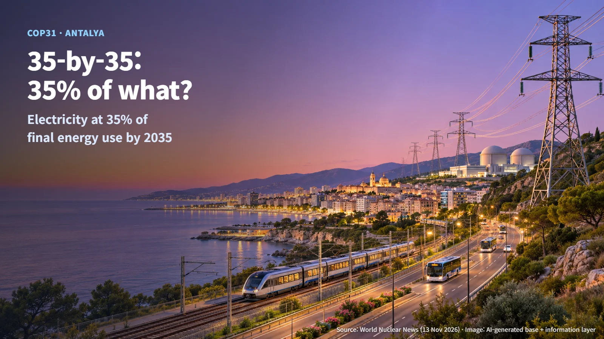
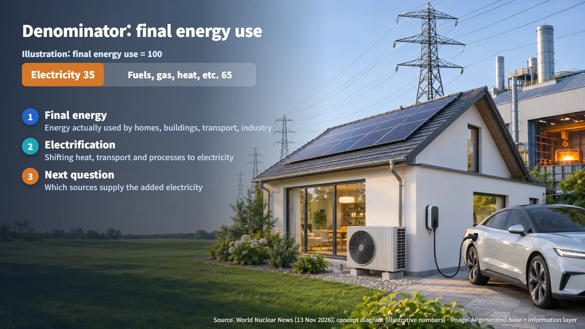
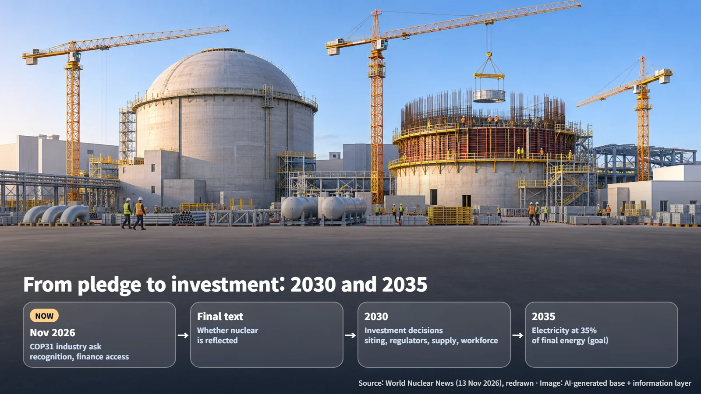

International · COP31 · Climate Policy
The 35% in COP31's "35-by-35": Electrification Targets and the Nuclear Industry's Ask
COP31's 35-by-35 goal aims for electricity to supply 35% of final energy consumption by 2035. The nuclear industry is asking for explicit recognition and equal access to finance.
When a climate summit headline carries a single percentage, the first question is usually simple: 35% of what? That question sits at the center of the "35-by-35" target now under discussion at COP31, the 31st Conference of the Parties to the UN Framework Convention on Climate Change, held in Antalya, Türkiye.
On November 13, World Nuclear News reported that industry representatives at COP31 urged recognition of nuclear energy's contribution to the 35-by-35 electrification target. The World Nuclear Association set out the same request in its summary, published on November 11, of an event held on November 10. Below, we look at what the 35% measures, what the nuclear industry is asking for, and what the 2030 and 2035 milestones imply for the work ahead.

The Denominator of 35% Is Final Energy Consumption
The 35-by-35 target aims to raise electricity's share of final energy consumption to 35% by 2035. The key term is "final energy."
Energy statistics commonly use three different yardsticks:
- Primary energy: energy in the form first taken from nature, such as crude oil, coal, natural gas, uranium, sunlight and wind.
- Final energy: energy in the form that end users such as factories, buildings and vehicles actually consume. Gasoline at the pump, gas in a boiler, heat from a district heating network and electricity from a wall socket all count as final energy.
- Generation mix: a breakdown of electricity alone by the source that produced it, such as nuclear, coal, gas or solar.
The 35% in 35-by-35 belongs to the second yardstick. It describes electricity's slice of the whole final energy basket.
A simple hypothetical example makes this concrete. Suppose a country consumes 100 units of final energy in a year. Under the target, 35 of those units would be used as electricity, and the remaining 65 units would be used in other forms, such as gasoline and diesel, gas, or heat. (These figures are an illustrative example created to explain the concept.)

The target is aimed at the share of electricity within final energy, and the choice of which sources generate that electricity rests with each country. A November 11 high-level dialogue document from the UNFCCC describes the target as a shared goal that takes national circumstances and development priorities into account.
How does electricity's share grow? Through electrification: switching home heating from gas boilers to heat pumps, transport from combustion-engine vehicles to electric vehicles, and industrial process heat from fuel firing to electric heating. As electrification advances, electricity demand rises, and a follow-up question arrives on its own: which low-carbon sources will supply that additional power? That is exactly where the nuclear industry's interest in this target begins.
What the Nuclear Industry Asked For: Equal Assessment and Access to Finance
The World Nuclear Association's request has two strands. First, it asks that nuclear energy be assessed on the same basis as other low-carbon sources and explicitly reflected in electrification declarations and UNFCCC discussions. Second, it calls for fair access for nuclear to taxonomies (the classification systems that define which investments count as sustainable), lending policies and climate finance.
The significance of the request becomes clearer when you trace how a policy turns into a power plant:
1. Industry request: This is the current stage. Industry and the association made their case publicly at COP31. 2. Reflection in declaration text: Whether nuclear is named in an electrification declaration or in COP31's final text will be confirmed when the final text is released. 3. Access through taxonomies, lending policies and climate finance: The principles in that text then need to flow into the investment criteria and loan terms used by financial institutions. 4. Actual investment decisions: Individual countries and project developers commit capital to building plants.
Each step changes something different. Text in a declaration changes international recognition. Taxonomies and lending policies change the cost and availability of financing. Only an investment decision leads to construction. Because nuclear plants carry large upfront construction costs, the terms on which money can be raised have a strong influence on whether a project moves forward. That explains why the industry emphasizes being judged "on the same basis" as other low-carbon options.
The request is at the request stage today. Its adoption will be confirmed in COP31's final text and in follow-up official announcements. After that, the developments to watch are national power plans, financing frameworks and investment in regulatory bodies.
The 2035 Target and 2030 Investment Decisions: The Preparation Ahead
The discussion summarized by the association stressed that turning the target into real projects requires investment decisions by 2030. A quick calculation shows why the timing matters:
- From now (2026) to investment decisions in 2030: 2030 − 2026 = about 4 years
- From now to the 2035 target year: 2035 − 2026 = about 9 years
Nuclear projects need considerable time for construction and commissioning after an investment decision is made. To contribute by 2035, then, the investment decisions need to be completed within roughly the first 4 of the remaining 9 years. That is the core of the argument raised in the discussion, which identified four areas of preparation:
- Site selection: deciding where new plants will be built
- Regulatory capacity: the staff and expertise regulators need to review licence applications
- Fuel and manufacturing supply chains: the ability to supply nuclear fuel and large components
- Workforce planning: securing people for design, construction and operation

The discussion added one more direction. Instead of pursuing projects one at a time, it called for continuity through standardized multi-unit programs. When a pipeline of several units of the same design is visible, component manufacturers gain a basis for investing in facilities and staff, and investors can anticipate the flow of future projects. A clear signal of steady work ahead helps suppliers and investors get ready sooner.
In short, 35-by-35 is a target for societies that use more electricity, and the nuclear industry's request is to have nuclear considered on equal terms among the options for supplying that growing demand. When COP31's final text is published, the next things to look at are how nuclear is worded in it and how financing and regulatory frameworks follow.